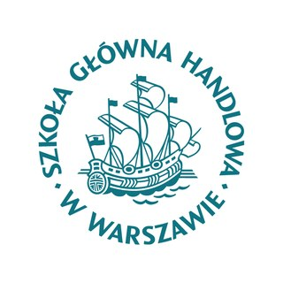
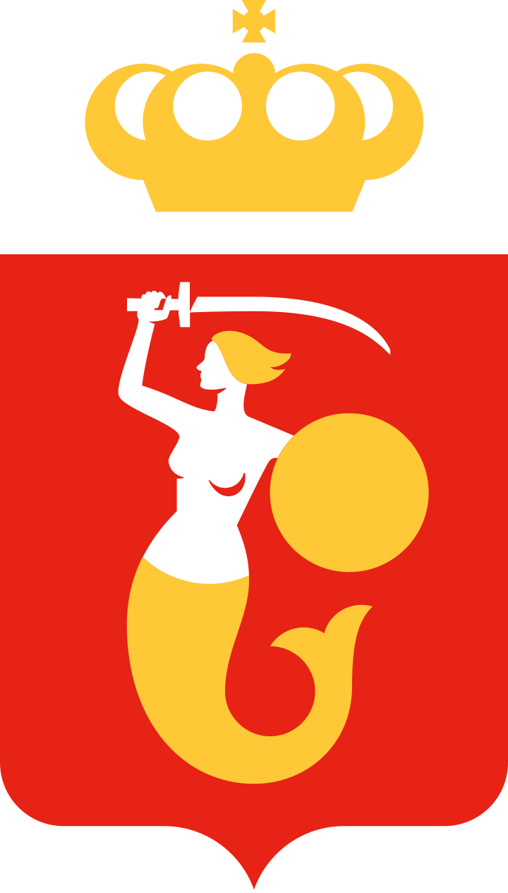
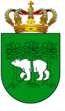

Alan Kieś
Wirtschaftsabsolvent der SGH Warschau mit Schwerpunkt auf internationalem Business und deutsch-polnischen Wirtschaftsbeziehungen.
Über mich
Ich habe 2026 meinen Bachelor im Studiengang „Global Business, Finance and Management (Governance)“ an der SGH Warsaw School of Economics abgeschlossen. Mein Schwerpunkt liegt auf den Wirtschaftsbeziehungen zwischen Deutschland und Polen – im Studium, in meiner Abschlussarbeit und im studentischen Engagement.
Praktische Erfahrung habe ich in den Bereichen Finanzmanagement, Rechnungswesen und Verwaltung gesammelt – im Praktikum bei CBRE und als Vorstandsmitglied zweier studentischer Vereine an der SGH.
Derzeit ziehe ich in die Region Nürnberg und suche eine Einstiegsposition, in der ich meine Kenntnisse in internationalem Business, Finanzen und deutsch-polnischer Zusammenarbeit einbringen kann.
Ausbildung


WarschauBachelor – Global Business, Finance and Management (Governance)
Vollzeit-Bachelorstudium mit Spezialisierung in internationalem Business und deutsch-polnischem Wirtschaftsmanagement.
Management der deutsch-polnischen Wirtschaftsaktivitäten
Interdisziplinäre Spezialisierung mit neun auf Deutsch absolvierten Fächern.

Allgemeine Hochschulreife
Regionale Differenzierung der deutschen Handelsbeziehungen mit Polen – ein Vergleich der östlichen und westlichen Bundesländer 2015–2024
Betreut am Lehrstuhl für deutsche Wirtschaftsforschung der SGH, mit der Note „sehr gut“ (5) verteidigt.
Erfahrung & Engagement
Vorsitzender
Leitung des Vereins, Organisation von Veranstaltungen und Kooperationen – darunter die deutsch-polnischen Sprachbrücken an der SGH.
Sommerpraktikum – Property Management
Praktikum in der Abteilung Property Management eines der weltweit führenden Immobiliendienstleister.
Stellv. Vorsitzender für Finanzen und Verwaltung
Verantwortung für Finanzen und Verwaltung des Vereins.
Erfolge & Zertifikate
Sprachen


Lassen Sie uns sprechen.
Ich freue mich über Nachrichten zu Jobangeboten, Kooperationen oder einfach zum fachlichen Austausch.